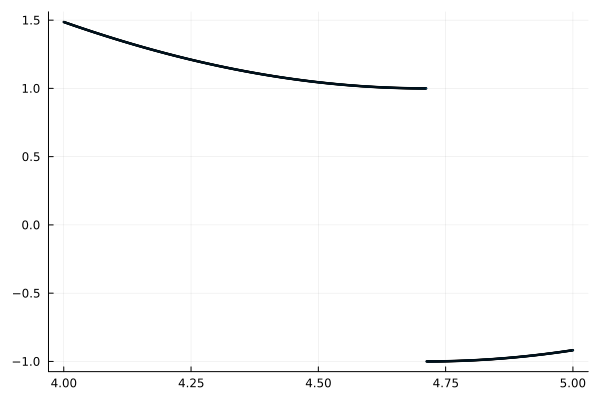

Week 9 Lecture 2: Overview of IntervalArithmetic.jl
In the previous lecture we took a closer look at the functionality in FLINT and Arblib.jl. In this lecture we will take a look at IntervalArithmetic.jl. Similar to FLINT it supports basic arithmetic, elementary functions and basic linear algebra routines. It does not implement any special functions or handling of polynomials. The focus of the lecture will be on some of the functionality that either differs or doesn't exist in the Arblib.jl package, namely:
- Decorations
- The "NG" label
- Predicates
- Automatic differentiation using ForwardDiff.jl
Decorations
Decorations are extra metadata associated with an interval. There are five available decorations:
com(common)dac(defined and continuous)def(defined)trv(trivial)ill(ill-formed)
In general the decoration is automatically computed. You can however manually specify the decoration at construction as well.
julia> using IntervalArithmeticjulia> interval(1, com)Interval{Float64}(1.0, 1.0, com, true)julia> interval(1, dac)Interval{Float64}(1.0, 1.0, dac, true)julia> interval(1, def)Interval{Float64}(1.0, 1.0, def, true)julia> interval(1, trv)Interval{Float64}(1.0, 1.0, trv, true)julia> interval(1, ill)┌ Warning: ill-formed interval [a, b] with a = 1, b = 1 and decoration d = ill. NaI is returned └ @ IntervalArithmetic ~/.julia/packages/IntervalArithmetic/f3Gip/src/intervals/construction.jl:412 NaI
Before we get into exactly what these decorations mean, let us consider a motivating example for why these decorations can be useful. Consider the problem of proving the existence of a zero on the interval $[4, 5]$ for the function
\[f(x) = 2\sin(x) + \operatorname{sign}(\cos(x / 3)) + 2.\]
In general, to prove the existence of a zero on an interval it suffices to verify that the signs at the endpoints differ. In this case we have
julia> f(x) = 2sin(x) + sign(cos(x / 3)) + 2f (generic function with 1 method)julia> f(interval(4))Interval{Float64}(1.4863950093841434, 1.4863950093841436, com, false)julia> f(interval(5))Interval{Float64}(-0.9178485493262771, -0.9178485493262767, com, false)julia> sign(f(interval(4))) != sign(f(interval(5)))true
So the signs at the endpoints do differ. However, plotting $f$ we see that there is no zero on the interval.
julia> using Plotsjulia> scatter(range(4, 5, 1000), f, ms = 1, legend = false)Plot{Plots.GRBackend() n=1}

The problem is, of course, that $f$ is not continuous. For this specific function, one could figure out exactly where the discontinuities are by hand and use this in the verification. For a general function, finding all the discontinuities is however a non-trivial problem. One of the main use-cases of decorations is to automate this. If we evaluate $f$ on the interval $[4, 5]$ we get
julia> f(interval(4, 5))Interval{Float64}(-1.0, 1.4863950093841436, def, false)
Note the decoration we get is def. This means that the function has not been proved to be continuous on the interval. If we instead evaluate the function on $[3, 4]$ (where it is continuous), we get
julia> f(interval(3, 4))Interval{Float64}(1.4863950093841434, 3.2822400161197347, com, false)
In this case the decoration is com, which guarantees the continuity of the function.
More precisely, the decorations have the following meanings (see the associated documentation):
com(common): $x$ is a closed, bounded, non-empty subset of the domain of $f$, $f$ is continuous on the interval $x$, and $f(x)$ is bounded.dac(defined and continuous): $x$ is a non-empty subset of the domain of $f$, and $f$ is continuous on $x$.def(defined): $x$ is a non-empty subset of the domain of $f$; in other words, $f$ is defined at each point of $x$.trv(trivial): $f(x)$ carries no meaningful information.ill(ill-formed): $f(x)$ is Not an Interval (NaI).
In the above example we got the decoration def, which does not imply that the function is continuous. As usual with interval arithmetic, overestimations in the enclosures can lead to more pessimistic decorations than necessary. For example, the function
\[\operatorname{sign}(1 + x^2 - x^2)\]
is clearly continuous everywhere (it is equal to 1). Computing an interval enclosure for the interval $[-1, 1]$ we, however, get
julia> x = interval(-1, 1)Interval{Float64}(-1.0, 1.0, com, true)julia> sign(1 + x^2 - x^2)Interval{Float64}(0.0, 1.0, def, false)
The issue in this case is that we get an overestimation of $1 + x^2 - x^2$ when computed in interval arithmetic.
The trv decoration occurs for functions that are not defined everywhere on the input interval. In this case the computed enclosure is for the intersection between the interval and the domain of the function. For example
julia> sqrt(interval(-1, 1))Interval{Float64}(0.0, 1.0, trv, true)julia> sqrt(interval(-1))∅_trv
The "NG" label
In the examples above you might have seen that the intervals sometimes have a trailing _NG, and sometimes don't. This is short for "Not Guaranteed" and is part of the library's tools for reducing the risk of accidentally mixing rigorous and non-rigorous computations. They signal that the computations could have been "poisoned" by non-rigorous computations.
Newly constructed intervals will by default have the guaranteed flag set to true. We can have the value explicitly printed by modifying the display settings.
julia> interval(1, 2)Interval{Float64}(1.0, 2.0, com, true)julia> setdisplay(:full)Display options: - format: full - decorations: true (ignored) - NG flag: true (ignored) - significant digits: 6 (ignored)julia> interval(1, 2) # The true at the end indicates that the interval is guaranteedInterval{Float64}(1.0, 2.0, com, true)julia> isguaranteed(interval(1, 2)) # The value can be checked explicitly as welltruejulia> setdisplay(:infsup) # Restore display settingsDisplay options: - format: infsup - decorations: true - NG flag: true - significant digits: 6
Operations only involving intervals will preserve the guaranteed flag. Note the absence of a _NG flag.
julia> x = interval(-1, 1)[-1.0, 1.0]_comjulia> y = interval(3)[3.0, 3.0]_comjulia> x + y[2.0, 4.0]_comjulia> sin(x)^y[-0.595823, 0.595823]_comjulia> sqrt(x)[0.0, 1.0]_trv
The guaranteed flag is set to false whenever intervals are mixed with non-intervals. In this case it prints the _NG flag.
julia> x + 2π[5.28319, 7.28319]_com_NGjulia> 2y[6.0, 6.0]_com_NG
In the first case the result truly is non-rigorous, since the multiplication of $\pi$ by two is performed using Float64. In the second case the result is in fact rigorous, since the 2 is represented exactly.
You can signal that a non-interval value is exact by using the exact function. You are then promising that you have verified that the value has been rigorously computed.
julia> exact(2) * y[6.0, 6.0]_com
If you do this for data that is not rigorous you can get wrong results.
julia> x = interval(2)[2.0, 2.0]_comjulia> sin(x * (2π)) # This should contain zero, but does not![-4.89859e-16, -4.89859e-16]_com_NGjulia> sin(x * exact(2π)) # This should contain zero, but does not![-4.89859e-16, -4.89859e-16]_comjulia> sin(x * 2interval(π)) # This does contain zero![-4.89859e-16, 1.2865e-15]_com_NGjulia> sin(x * exact(2) * interval(π)) # So does this![-4.89859e-16, 1.2865e-15]_com
The guaranteed flag can be very helpful for reducing the risk of accidentally introducing non-rigorous computations in your computer-assisted proofs. This is in particular helpful to find places where computations were done with Float64 values. For example
julia> x - interval(1, 2)[0.0, 1.0]_comjulia> 1 / 3 * x # 1 / 3 in Float64[0.666667, 0.666667]_com_NGjulia> 2π * x # 2π in Float64[12.5664, 12.5664]_com_NGjulia> sqrt(3) * x # sqrt(3) in Float64[3.4641, 3.4641]_com_NG
However, it also catches operations involving integers, where it is much more common that the operation actually is rigorous.
julia> 2x # OK![4.0, 4.0]_com_NGjulia> 1 // 3 * x # OK![0.666667, 0.666667]_com_NG
The motivation for also catching integers is that they are not always guaranteed to be correctly computed, for example due to overflow.
julia> 2^64 * x # 2^64 overflows[0.0, 0.0]_com_NGjulia> interval(2)^64 * x[3.68935e+19, 3.68935e+19]_com
Predicates
Arblib.jl and IntervalArithmetic.jl differ in how they handle predicates.
- Arblib.jl returns
trueif the predicate is guaranteed to be satisfied andfalseotherwise. - IntervalArithmetic.jl returns
trueif the predicate is guaranteed to be satisfied,falseif it is guaranteed to be false and throws an error otherwise.
This difference can be seen when checking if an interval is zero
julia> using Arblibjulia> # Both return true for exactly zero input iszero(Arb(0))truejulia> iszero(interval(0))truejulia> # Both return false for non-zero input iszero(Arb(1))falsejulia> iszero(interval(1))falsejulia> # Arblib returns false and IntervalArithmetic throws for input overlapping zero iszero(Arb((-1, 1)))falsejulia> iszero(interval(-1, 1))ERROR: InconclusiveBooleanOperation: The operation `[-1.0, 1.0]_com == [0.0, 0.0]_com` cannot be determined unambiguously. See the documentation for more information. See also `isequal_interval`.
The same philosophy is used for other predicates as well. For Arblib.jl this means that many predicates have a function checking the negation. For example, Arblib.isnonzero checks if input is non-zero
julia> Arblib.isnonzero(Arb(0))falsejulia> Arblib.isnonzero(Arb(1))truejulia> Arblib.isnonzero(Arb((-1, 1)))false
For IntervalArithmetic.jl this is not needed.
Automatic differentiation
The IntervalArithmetic.jl package does not support computation of truncated Taylor series. Instead, computations of derivatives are done using more traditional automatic differentiation through the ForwardDiff.jl package.
julia> using ForwardDiffjulia> ForwardDiff.derivative(sin, interval(1))[0.540302, 0.540302]_com
This is rigorous and in general highly efficient. Unfortunately, for higher order derivatives the situation is more complicated. In general, higher order derivatives are computed by nesting ForwardDiff.derivative calls. This gives both slightly awkward code and is also less performant than the Taylor arithmetic approach.
julia> sin(interval(1))[0.841471, 0.841471]_comjulia> ForwardDiff.derivative(sin, interval(1))[0.540302, 0.540302]_comjulia> ForwardDiff.derivative(x -> ForwardDiff.derivative(sin, x), interval(1))[-0.841471, -0.841471]_comjulia> ForwardDiff.derivative(x -> ForwardDiff.derivative(x -> ForwardDiff.derivative(sin, x), x), interval(1))[-0.540302, -0.540302]_comjulia> # Alternatively, using do-notation ForwardDiff.derivative(interval(1)) do x ForwardDiff.derivative(x) do x ForwardDiff.derivative(sin, x) end end[-0.540302, -0.540302]_com
There is a TaylorSeries.jl package for Julia as well. It does seem to work for interval arithmetic and I would believe it gives rigorous results in this case. However, I'm not entirely sure about the status.